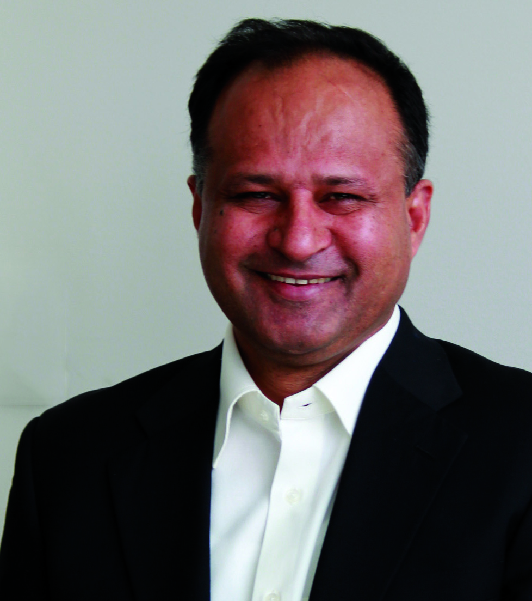
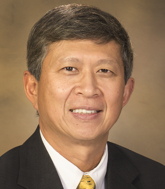
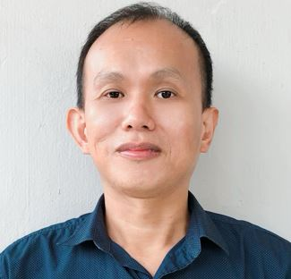
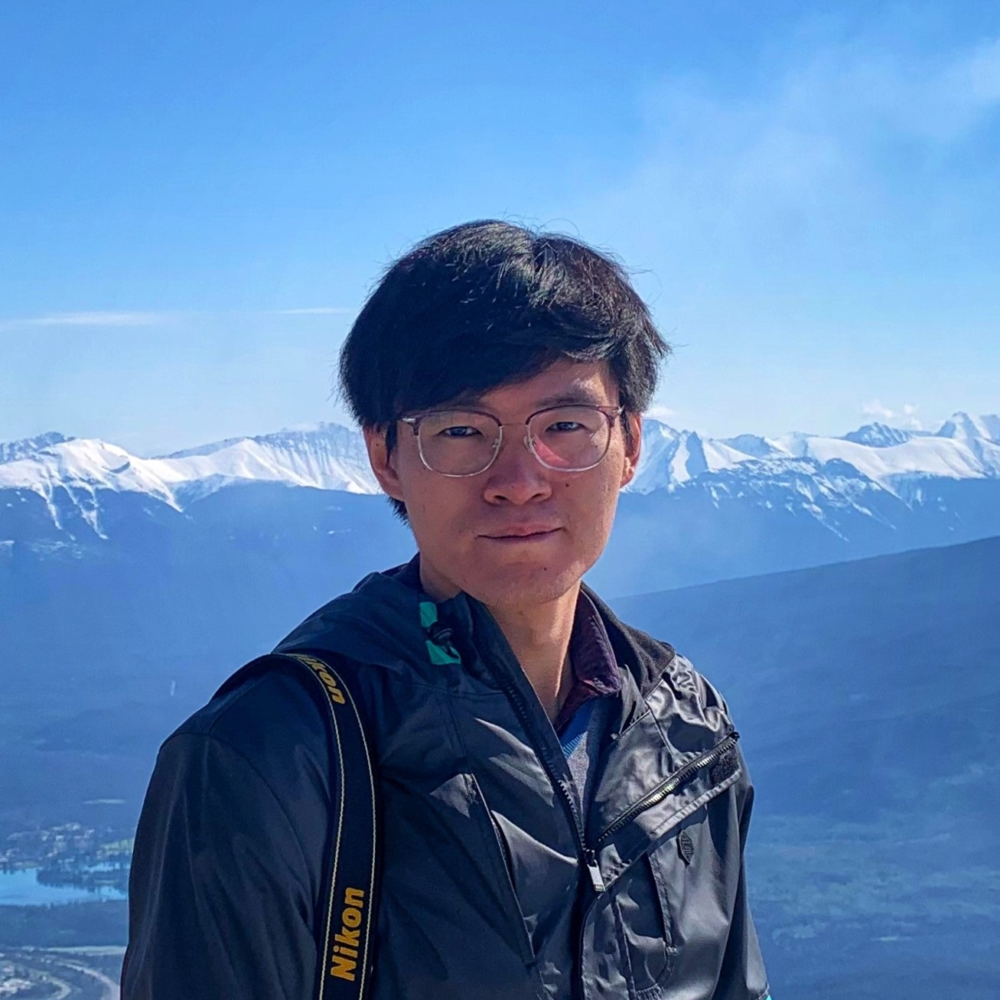
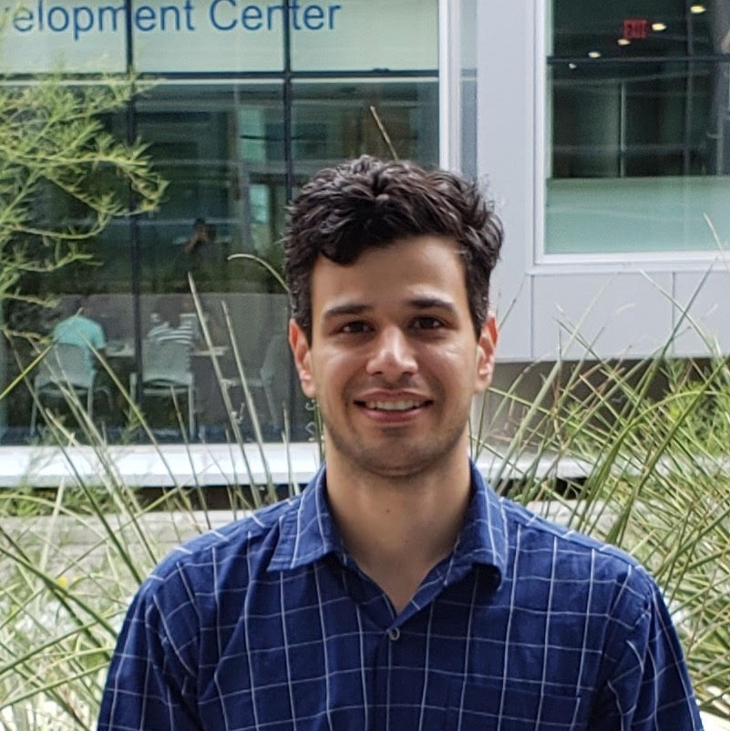
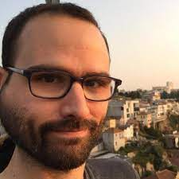
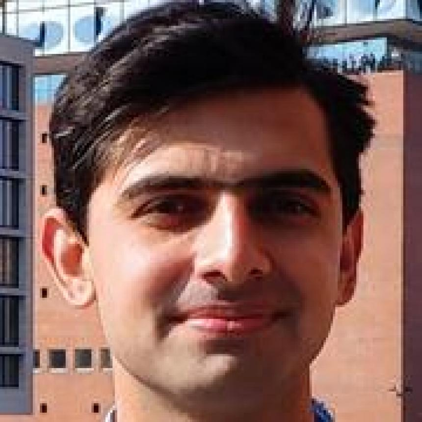

University of Adelaide
Singapore Institute of Technology
Nanyang Technological University
| Home | Registration | Program | Directions |
In the past decades, cybersecurity threats have been among the most significant challenges for social development resulting in financial loss, violation of privacy, damages to infrastructures, etc. Organizations, governments, and cyber practitioners tend to leverage state-of-the-art Artificial Intelligence technologies to analyze, prevent, and protect their data and services against cyber threats and attacks. Due to the complexity and heterogeneity of security systems, cybersecurity researchers and practitioners have shown increasing interest in applying data mining methods to mitigate cyber risks in many security areas, such as malware detection and essential player identification in an underground forum. To protect the cyber world, we need more effective and efficient algorithms and tools capable of automatically and intelligently analyzing and classifying the massive amount of data in cybersecurity complex scenarios. This workshop will focus on empirical findings, methodological papers, and theoretical and conceptual insights related to data mining in the field of cybersecurity.
The workshop aims to bring together researchers from cybersecurity, data mining, and machine learning domains. We encourage a lively exchange of ideas and perceptions through the workshop, focused on cybersecurity and data mining. Topics of interest include, but are not limited to:
|  |  |
|
Ali Babar University of Adelaide |
Hsinchun Chen University of Arizona |
|
Yang Liu Nanyang Technological University |
Roberto Perdisci University of Georgia |
|
 |
 |
 |
|
Sin Gee Teo Institute for Infocomm Research |
RuiTao Feng Nanyang Technological University |
Mohammadreza (Reza) Ebrahimi University of South Florida |
|
|
 |
|
Weifeng Li University of Georgia |
Jason Pacheco University of Arizona |
|
 |
|
|
|
Faheem Ullah University of Adelaide |
Tram Truong-Huu Singapore Institute of Technology |
Shangqing Liu Nanyang Technological University |